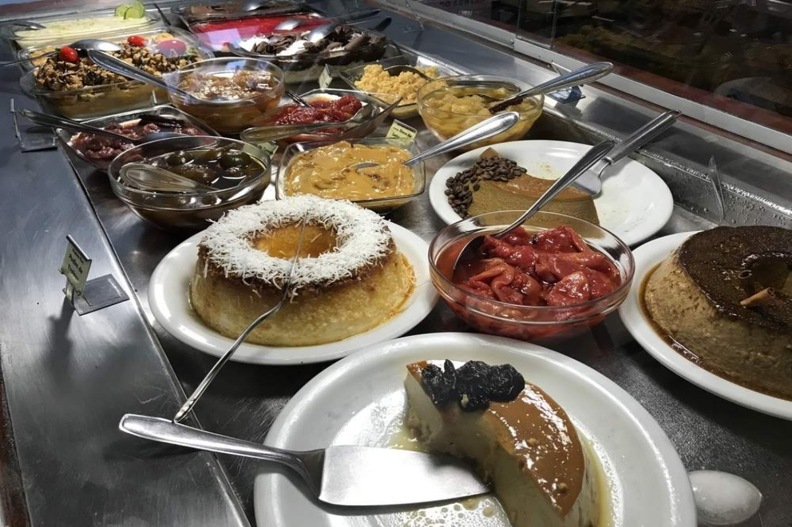
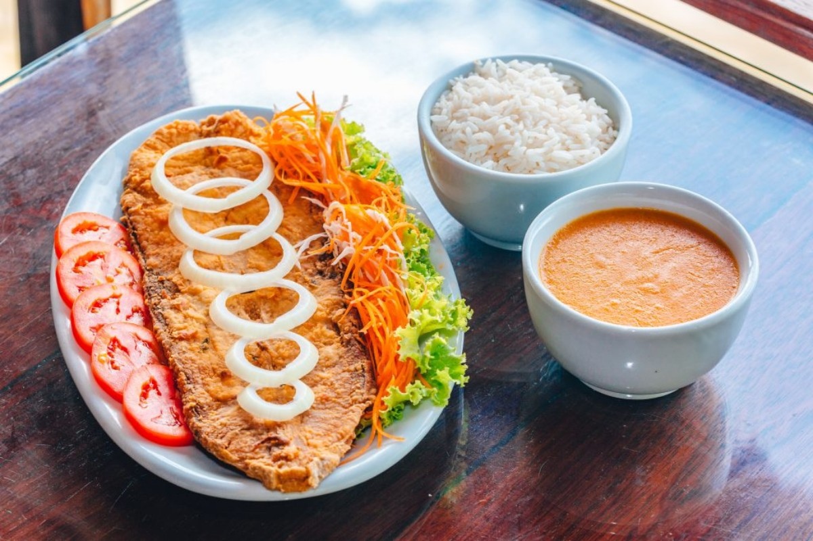
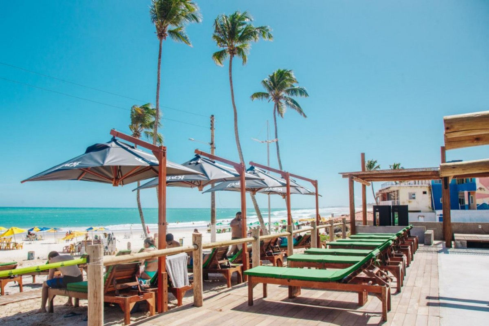
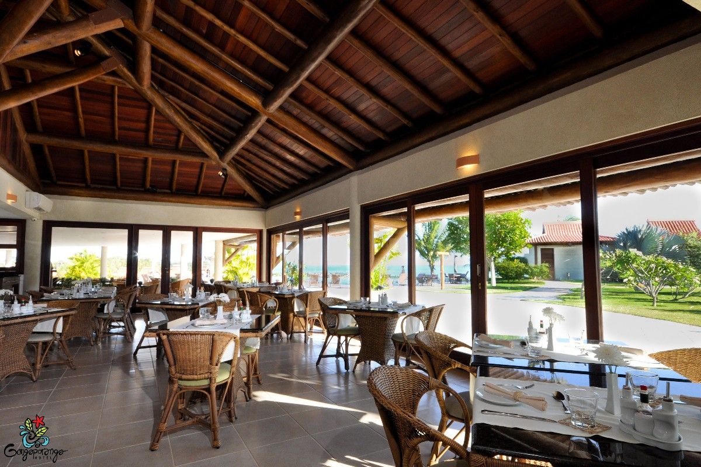
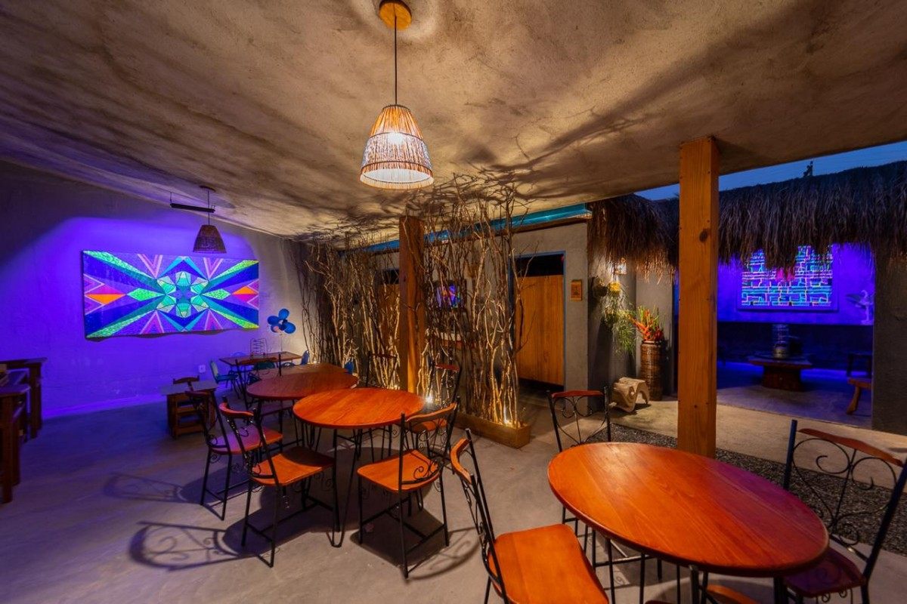

Restaurante Bodega do Sertão
No que se refere a uma excelente comida e uma experiência gastronômica que mostre a diversidade da culinária local, o restaurante Bodega do Sertão, localizado também na Jatiúca, oferece um ótimo serviço, sendo um dos restaurantes mais conceituados da capital.
Marechal Deodoro
Bar do Pato
Se tratando de culinária, Marechal Deodoro não deixa a desejar de forma nenhuma. Possui um dos principais e mais famosos polos gastronômicos de Alagoas, no bairro da Massagueira, que além de contar com uma grande variedade de pratos típicos, em todos os restaurantes da região, ainda oferece uma vista lindíssima da lagoa Manguaba, que banha uma imensa parte de toda a sua extensão. Como sugestão de restaurante, fica o Bar do Pato, de onde é possível desfrutar de tudo descrito anteriormente: comida boa e vista de tirar o fôlego.
Paripueira
Anauê
Para fazer boas refeições em Paripueira, o restaurante Anauê é uma excelente opção. É um receptivo que oferece a estrutura necessária para os clientes passarem o dia, com serviços semelhantes aos de um hotel, e com uma boa diversidade de gastronomia, com pratos para almoço e petisco.
Barra de São Miguel
Restaurante Gungaporanga
Para quem deseja sofisticação e comer bem, conhecendo a culinária local, fica como sugestão o restaurante Gungaporanga, localizado um pouco depois da praia das Conchas.
São Miguel dos Milagres
Villa Milagres
Para comer em Milagres, a sugestão é o restaurante Villa dos Milagres, que se destaca pelo cardápio diversificado em frutos do mar e por funcionar no período da noite, servindo também drinks variados.
